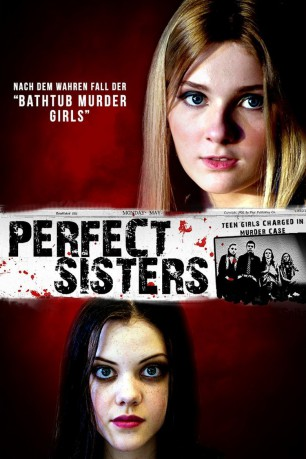
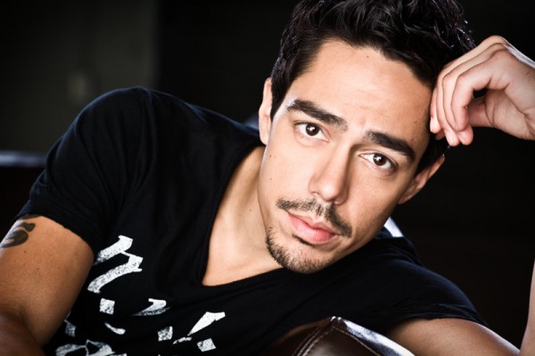

#7334 Perfect Sisters
 
 IMDB-Wertung: 5.6 / 10
IMDB-Wertung: 5.6 / 10  Tomatometer: 27
Tomatometer: 27  Metascore: 0
Metascore: 0 
Die unzertrennlichen Schwestern Sandra und Beth teilten sich von Kindesbeinen an alles und blieben selbst mit Beginn der Pubertät einander nahe, auch wenn sie begannen, jeweils etwas mehr Individualität für sich zu beanspruchen. So interessiert sich die eine für Jungs und ist extrovertiert, während sich die andere lieber in die Welt der Bücher zurückzieht. Mit dem Älterwerden nimmt nun auch ihr Bewusstsein für die wachsenden Probleme in der Familie zu. Ihre Mutter Linda hat immer stärker mit der Alkoholsucht zu kämpfen und lacht sich einen Liebhaber an, der sich als gewaltbereiter Choleriker entpuppt. Irgendwann haben die Schwestern es satt und fassen einen Entschluss: Mit ihrer Freundin Ashley zusammen planen sie die Ermordung ihrer Mutter - und wollen Lindas Ableben dabei wie einen Unfall aussehen lassen.
Jahr: 2014
Dauer: 101 Minuten
FSK: 12
Land: Kanada Studio: Alive Vertrieb und MarketingTonspuren: DTS - ,
Untertitel:
Auflösung: 1080p (1920x1080) Größe: 6584 MB
Genre: Thriller, Drama, Krimi
Regisseur: Stanley M. Brooks
Drehbuch: Fab Filippo
Soundtrack:
Darsteller:
 Abigail Breslin als Sandra Anderson
Abigail Breslin als Sandra Anderson- Georgie Henley als Beth Anderson
 Mira Sorvino als Linda / Perfect Mom
Mira Sorvino als Linda / Perfect Mom James Russo als Steve Bowman
James Russo als Steve Bowman Rusty Schwimmer als Aunt Martha
Rusty Schwimmer als Aunt Martha- Zoë Belkin als Ashley
 Jeffrey Ballard als Justin
Jeffrey Ballard als Justin Jonathan Malen als David
Jonathan Malen als David Stephan James als Donny
Stephan James als Donny-  Zak Santiago als Detective Santiago Gates
- Sarah Constible als Female Police Officer
- Marina Stephenson Kerr als Sheila
- Frank Adamson als Judge
 Spencer Breslin als Cousin Derek
Spencer Breslin als Cousin Derek- Markian Tarasiuk als Student , uncredited
- Ron Verwymeren als Bailiff , uncredited
- Caleb Pederson als Bobby
- Braden Pederson als Bobby
- Ed Sutton als Prosecutor
- Robert Huculak als Lawyer
- John Pielmeier als Vice Principal Raymond Ziff
- Joanne Rodriguez als Bobby's Teacher
- Fab Filippo als Ashley's Lawyer
- Bryan Young als Hanger-on
- Candace Smith als Restaurant Manager
- Lorraine James als Social Worker
- Ali Vivier-Hannay als Student
- Chris Sigurdson als Walter
- Meagan Haber als Drunk Chick
- Adam Till als Glee Club Teacher
- Judith F. Lyons als Children's Aid Worker
- Rachael Henley als Home Movie Sandra
- Laura Henley als Home Movie Beth
- Becky Ganczewski als 'Glam Mom' Dog
- Muriel Flett als Party Goer , uncredited
Datei: X:\2014(N-Z)\Perfect Sisters (2014, FSK12, 1920x1080).mkv seit 16.10.2017
Festplatte: HD 2013(I-Z)-2014(A-Z)
 Es gibt insgesamt 163 Filme in der Gruppe '2014(N-Z)'
Es gibt insgesamt 163 Filme in der Gruppe '2014(N-Z)'